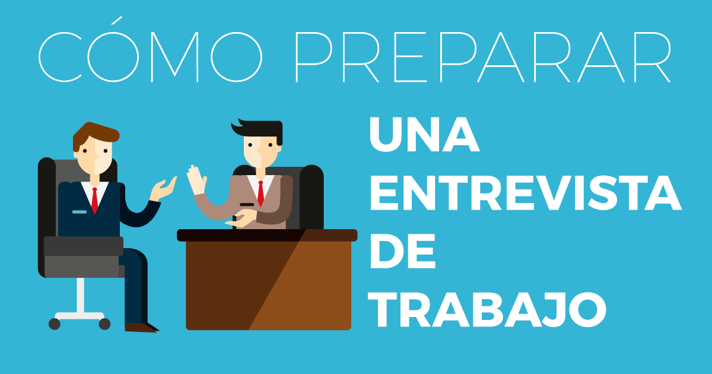

 Es una situación que produce un alto grado de nerviosismo y ansiedad. Puedes prepararla de antemano y afrontar la entrevista como un reto enriquecedor, una situación de la que puedes aprender y obtener aspectos positivos.
Para esto puedes seguir los siguientes consejos que te proponemos:
- Infórmate previamente sobre el puesto, la empresa y el cargo.
- Identifica tus puntos fuertes y débiles. Ten en cuenta que tampoco te convienen desvelar debilidades que puedan perjudicarte.
- Analiza tu proyecto y tus argumentos.
- Prepárate las preguntas que vas a formular.
- Sé optimista y confía en ti mismo.
- Analiza la imagen que quieres transmitir y elige, en función de ella, los elementos de tu aspecto personal por si en algún momento de la entrevista lo necesitas.
- Prepara tu curriculum, documentos acreditativos y referencias de forma ordenada y limpia.
- Sé puntual.
Debes considerar que el proceso de pasar por una entrevista, incluso aunque no seas seleccionado, supone una experiencia positiva que te aporta seguridad para afrontar nuevas entrevistas como situaciones más conocidas.
¿Qué te pueden preguntar?
No dejes un momento para la improvisación. Durante la entrevista, te preguntarán acerca de diversos ámbitos,
procura reflexionar ántes, pensando qué podrías contestar de los siguientes:
- Personalidad:
sobre ti mismo, anécdotas, valores, motivaciones e influencias.- Formación:
razones para la elección de tu itinerario de formación.- Trabajos anteriores:
actividades, funciones, proyectos, compañeros.- Empleo:
preferencias, relaciones en el trabajo, puntos fuertes y débiles, objetivos.- Vida privada:
familia, relaciones personales, tiempo libre, vacaciones, hobbies.- Varias:
incorporación al trabajo, opiniones, referencias.
Prueba contestando preguntas como las siguientes, seguro te servirán:
- ¿Por qué dejó su último trabajo?
- ¿Qué conoce sobre nuestra empresa?
- Nombre dos de sus puntos fuertes y débiles.
- ¿Dónde se ve en cinco años?
- ¿Por qué debería contratarlo?
- Describa un día habitual en su anterior trabajo.
- ¿Qué puede aportar a la empresa?
Las respuestas deben ser concisas y directas. Siempre que puedas, utiliza ejemplos para ser más claro y trata de buscar la relación con temas laborales.
Además de preparar las respuestas a las posibles preguntas, puedes preparar preguntas para formular tú mismo acerca de:
- Principales responsabilidades y funciones del puesto.
- Desarrollo profesional, condiciones, incentivos.
- Sobre tus futuros compañeros, jefes, subordinados.